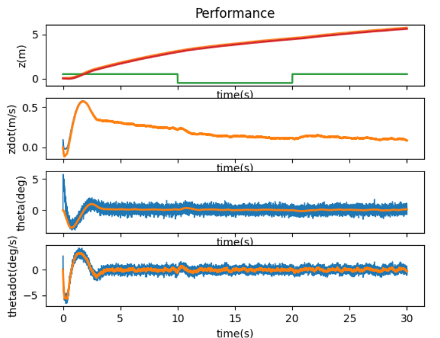
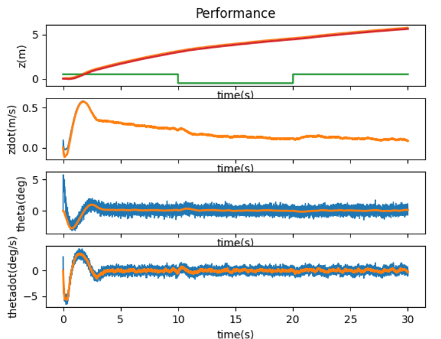

The objective of this lab is to finish up control by implementing a Kalman Filter in the simulated inverted pendulum.

C = np.matrix([[1.0, 0.0, 0.0, 0.0],
[0.0, 1.0, 0.0, 0.0],
[0.0, 0.0, 1.0, 0.0],
[0.0, 0.0, 0.0, 1.0]])
whereas this week the C matrix is only
#Measure one state only
C = np.matrix([[0.0, 0.0, 0.0, 1.0]])
Indicating that the only state being measured is the fourth, which is theta dot in this code.
#with process noise:
dydt = [ydot0 + np.random.randn()*0.01, ydot1 + np.random.randn()*0.01, ydot2 + np.random.randn()*0.01, ydot3 + np.random.randn()*0.01]
The Kalman filter still worked, though slightly less smoothly
sigma = np.eye(4)*0.00001 in runSimulation.py, but that didnt appear to actually affect the filter. Next, I tried changing it within the loop that calculates each state, by adding an element of randomness to the y_kf value that gets passed to the kaulman filter, and that resulted in a noisier output.
mu = np.array([[P.z0+.01], [P.zdot0+.01], [P.theta0+.01], [P.thetadot0+.01]]). Next, I pumped it up by a factor of 10 to see what would happen, adding .1 to each state.
u=-Kr.dot(mu-des_state)
if(u>0):
if(u>1.85):
u = 1.85
elif(u<.275):
u = 0 #deadband
else:
if(u<-1.85):
u = -1.85
elif(u>-.275):
u = 0 #deadband
A = np.matrix([[0.0, 1.0, 0.0, 0.0],
[0.0, -b/m2, -m1*g/m2, 0.0],
[0.0, 0.0, 0.0, 1.0],
[0.0, -b/(m2*ell), -(m1+m2)*g/(m2*ell), 0.0]])
B = np.array([[0.0], [1.0/m2], [0.0], [1.0/(m2*ell)]])
I increased the matrix by .01 to start with, just as I did with noise and others. That worked fine, so I increased to .1, which also worked. Eventually, pushing it to .5 caused it to slowly drift off screeen, although apparently still be stableKr = control.place(P.A*1.5,P.B*1.5,dpoles) Below are the (left) .1 increase and (right) .5 increase
 
